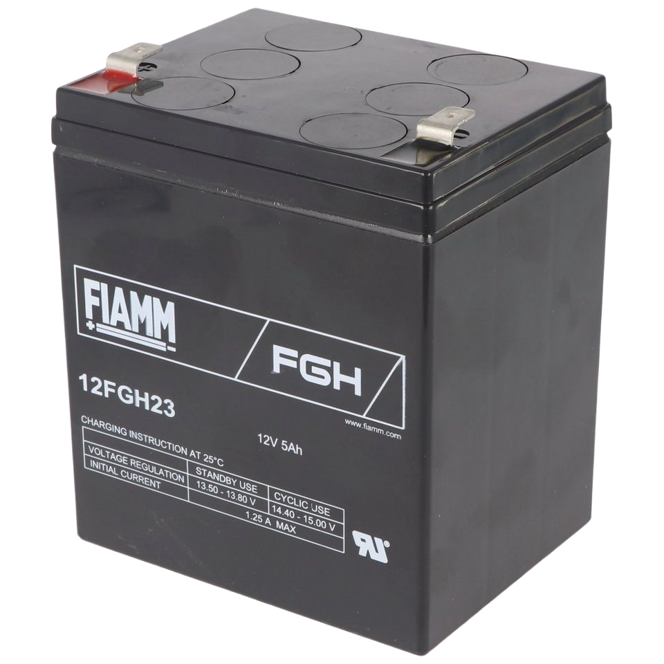
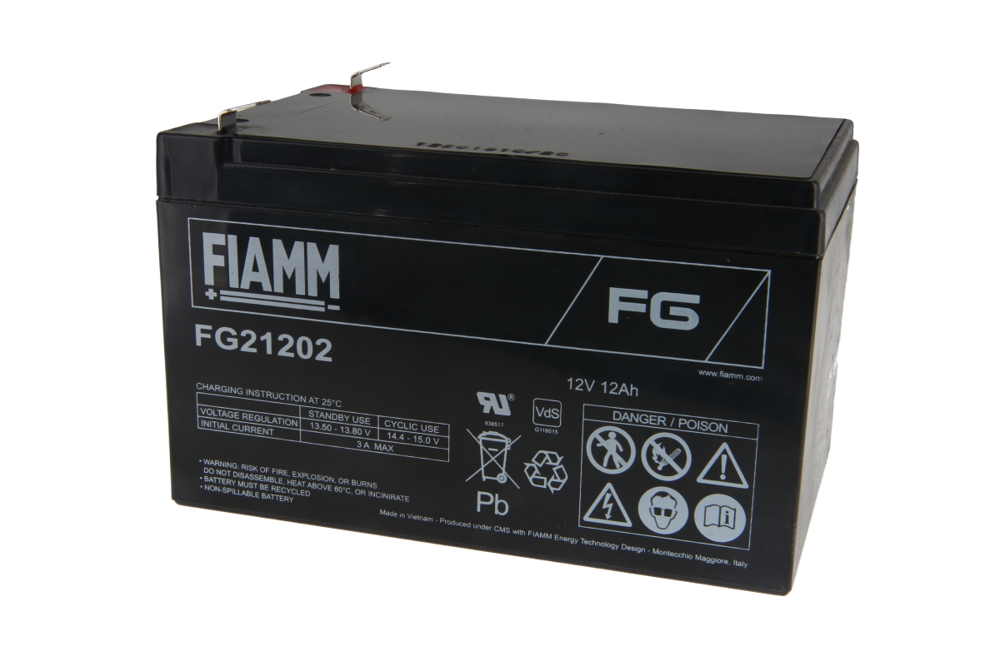

Batteries
Shipping
Note
The robots ship worldwide by air without batteries. This reduces shipping costs and avoids restrictions on transporting batteries. Lead acid batteries are easy to source locally.
The robots support different battery sizes. This allows users to choose between a long-endurance but heavier setup, or a lighter and more portable configuration. Typical sources for suitable batteries include scooter, wheelchair, UPS, and automotive suppliers.
Warning
THE VOLTAGE CONNECTED TO THE MAIN CONTROL BOARD (MCB) MUST REMAIN 30.0V OR LESS AT ALL TIMES!
What kind of Battery?
The batteries used in Magni 6 robots are sealed lead-acid (SLA) batteries, specifically Absorbent Glass Mat (AGM) Valve-Regulated Lead-Acid (VRLA) types. These batteries are safe, maintanance-free, and don’t leak, making them ideal for robotics.
Which Battery?
For all of our robots we suggest using two identical 12V, AGM VRLA lead acid batteries with F2 terminals.
Recommendation for batteries:
Magni 6 Mini
The recommended battery for Magni 6 Mini is Fiamm 12FGH23.
{kind=link}
Some equivalent batteries include:
Yuasa NP5-12
PowerSonic PS-1250
Universal Power UB1250
CSB HR1221W F2
Important
This list of equivalent batteries was written from an internet search. It is not exaustive, definitve, or the primary reference, but merely a sample of compatible options.
Magni 6 Midi
The recommended battery for Magni 6 Midi is Fiamm FG21202.
{kind=link}
Some equivalent batteries include:
CSB GP12120
Ritar RT12120
Yuasa NP12-12 (2.5 mm higher than the rest)
Important
This list of equivalent batteries was written from an internet search. It is not exaustive, definitve, or the primary reference, but merely a sample of compatible options.
For the best battery choice, consult a local supplier.
Battery Specifications
Mini
Feature |
Details |
|---|---|
Voltage |
12V |
Capacity |
5Ah (20h rate) |
Type |
AGM VRLA |
Terminals |
F2 (6.3mm) |
Size (LxWxH) |
90x70x101mm |
Weight (approx.) |
1.65-2 kg |
Midi
Feature |
Details |
|---|---|
Voltage |
12V |
Capacity |
12Ah (20hr rate) |
Type |
AGM VRLA |
Terminals |
F2 (6.3mm) |
Size (LxWxH) |
151x98x95mm |
Weight (approx.) |
3.8-4.0 kg |
Charging
Warning
The stock battery charger we supply is ONLY FOR LEAD ACID batteries and will not work and in fact may be dangerous for other battery technologies. As the system is designed for lead acid batteries if you use anything else the battery state topic could give misleading numbers as to the true battery state. This will not affect the ability of the robot to drive properly.
To charge the batteries, follow these steps:
Check Your Robot’s Documentation: Refer to the documentation for specific charging instructions, as different models have different requirements.
Use a Compatible Charger: Use the designated 24V lead-acid charger provided with your Magni 6 robot, or ensure any replacement charger is rated for 24V AGM VRLA batteries.
- Charging Method:
- Using Designated Charger:
Locate the charger port (varies by model: Mini, Midi).
Remove the port cap.
Plug the charger into the wall socket, then connect the connector (inner pin positive, outer sleeve negative) to the charger port.
- Manual Separate Charging:
Disconnect both batteries from the robot.
Take both batteries out of the robot.
Charge each 12V battery individually using a 12V lead-acid charger or a Power Supply.
- Manual Series Charging:
Disconnect batteries from circuits.
Take them out of the robot.
Keep them connected in series (positive of first battery connected to negative of second battery)
Charge the batteries
Charge both batteries together connected in series by using 24V lead-acid charger or a Power Supply.
- Charge Time: Charge time will vary depending on the robot and batteries.
When charging with our charger, check the LED: GREEN = fully charged, RED = charging.
When charging with Power Supply with upper bound on voltage and constant current charge until supply switches from constant current to constant voltage and the current drops to 0.05 A.
- Safety Tips:
Charge in a well-ventilated area.
When manually charging the robot, avoid overcharging.
Do not use or charge a damaged battery.
Check the polarity.
Important
Verify the polarity (inner pin positive, outer sleeve negative) before connecting.
Warning
Incorrect charging can damage the batteries or pose safety risks. Always follow the manufacturer’s instructions. Every battery has relevant information on the side.
Charging with Power Supply
Charging with a Power Supply depends on both the battery capacity and the number of batteries connected.
For a single 12V, ~5Ah battery, use a charging voltage of around 14V with a current of about 0.5 A(5Ah / 10). For safer, slower charging, set the current slightly lower at 0.44~0.46A.
When charging multiple batteries in series, the required voltage increases proportionally (two batteries: ~27-28V), but the charging current should remain at 0.45-0.5 Ah. Higher current can be used for faster charging, but never exceed the manufacturer’s specified maximum current rating.
Important
This section assumes you have a power supply equivalent to PCWork PCW07A Power Supply.
The guide also assumes that you are using one of the lead acid batteries listed above.
Typical Current Draw
TABLE CONTENT INCOMING
Operating State |
Current (Amps) |
|---|---|
Stationary, Pi4/Pi5 (4GB) only, motors off |
[to be tested] |
Driving, flat surface, ~0.5 m/s, no load |
[to be tested] |
Rotating in place, no load |
[to be tested] |
Stationary, motors powered |
[to be tested] |
Stationary, pushing wheels (fighting torque, no slipping) |
[to be tested] |
Locked wheels, applying strong torque |
[to be tested] |
TABLE CONTENT INCOMING
Operating State |
Current (Amps) |
|---|---|
Stationary, Pi4/Pi5 (4GB) only, motors off |
[to be tested] |
Driving, flat surface, ~0.5 m/s, no load |
[to be tested] |
Rotating in place, no load |
[to be tested] |
Stationary, motors powered |
[to be tested] |
Stationary, pushing wheels (fighting torque, no slipping) |
[to be tested] |
Locked wheels, applying strong torque |
[to be tested] |
Note
Instantaneous peaks can exceed 10A but are transient and not useful for battery.
Driving uphill or with heavy loads increases draw further.
Capacity and Aging
Important
The Magni robots cannot detect battery health or age. Percantage values are based on new batteries. Over time, lead acid batteries lose capacity and may never again charge to “100%”.
Key points:
- Do not run the robot below 50% capacity (~24V for 24V system, ~12V per cell)
Deep discharge causes sulfation and shortents lifespan. The robot must be fully powered off at the MCB switch, not just via Pi shutdown.
The MCB cuts off power at ~20V to prevent total discharge.
- Old or damaged cells may gas (rotten egg smell) if left on charge.
Disconnect charger once charging is complete in these cases.
- The MCB draws ~0.04W (1-2mA at 24V) even when off.
For storage longer than 3 weeks, disconnect at least one battery lead.
Capacity |
24V System Voltage |
12V Battery |
|---|---|---|
100% |
26.0 V |
13.0 V |
90% |
25.5 V |
12.75 V |
80% |
25.0 V |
12.50 V |
70% |
24.60 V |
12.30 V |
60% |
24.30 V |
12.15 V |
50% |
24.10 V |
12.05 V |
40% |
23.9 V |
11.95 V |
30% |
23.62 V |
11.81 V |
20% |
23.32 V |
11.66 V |
10% |
23.02 V |
11.51 V |
0% |
21.0 V |
10.50 V |
Note
For more detail see: Batterystuff Lead Acid Battery Basics
Important
If you are unsure about any aspect of battery selection or charging, consult a professional or contact Ubiquity Robotics support.